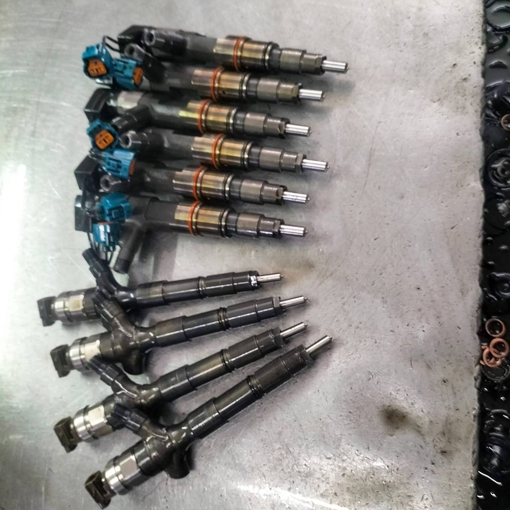
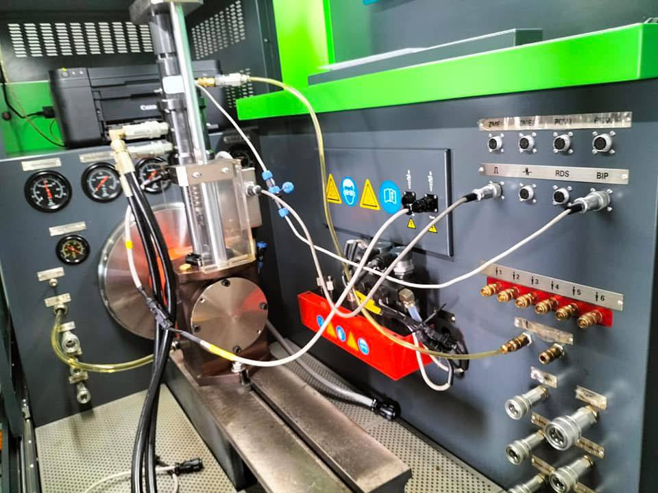
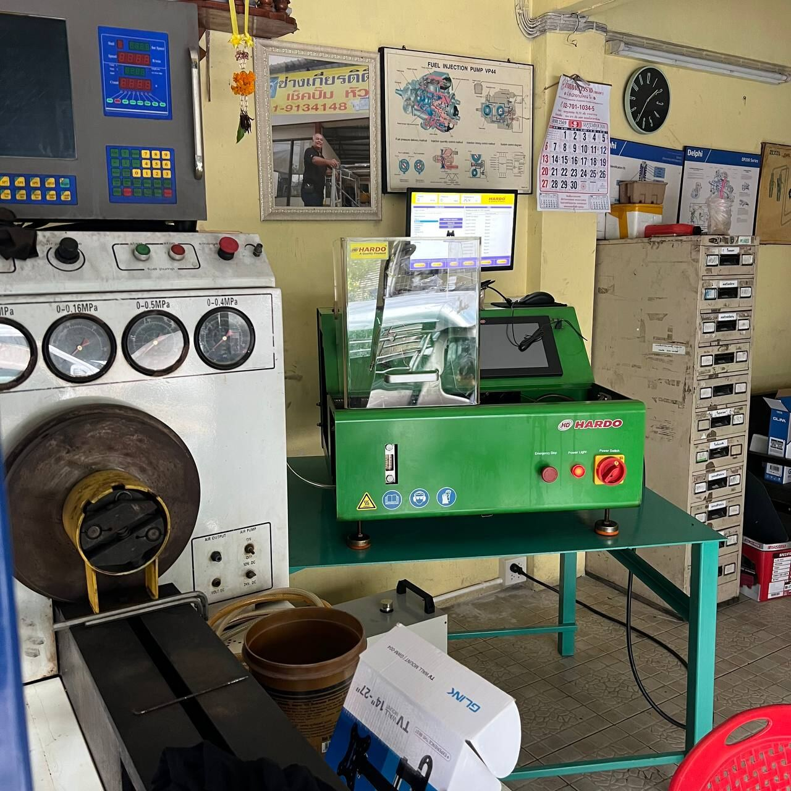

ได้ครับ แพรกษาดีเซล สมุทรปราการ รับตรวจและซ่อมปั๊มดีเซลและหัวฉีดดีเซลที่ถอดมาแล้ว ไม่ต้องนำรถมาด้วย จะถือมาที่ร้านหรือส่งทางขนส่งก็ได้
ขอแค่ทักร้านก่อนส่งทุกครั้ง ส่งรุ่นรถ อาการ รหัสอะไหล่ และภาพชิ้นส่วนมาให้ดูก่อน ร้านจะตรวจ แจ้งผล และแจ้งราคาให้ตัดสินใจก่อนซ่อม
- 1. ทักร้านก่อนส่งข้อมูลและภาพทาง LINE
- 2. ส่งชิ้นส่วนถือมาที่ร้าน หรือส่งขนส่ง
- 3. รับผลและราคาตกลงก่อน ร้านจึงเริ่มซ่อม

บทความนี้เหมาะกับเจ้าของรถที่ถอดชิ้นส่วนเองได้ และอู่ซ่อมรถที่อยากส่งปั๊มหรือหัวฉีดของรถลูกค้ามาให้ร้านเฉพาะทางตรวจ อ่านจบแล้วจะรู้ว่าต้องเตรียมอะไร และส่งยังไงให้เร็วและไม่เสียเที่ยว
ต้องนำรถมาด้วย หรือส่งเฉพาะชิ้นส่วนได้?
ส่งเฉพาะชิ้นส่วนได้ เลือกได้ 2 แบบ
ถือมาที่ร้าน
นำปั๊มหรือหัวฉีดมาที่ร้านแพรกษาดีเซล ถนนแพรกษา สมุทรปราการ เปิดทุกวัน 08:00–21:00 น. ทักนัดก่อนมาจะสะดวกกว่า
ส่งทางขนส่ง
เหมาะกับลูกค้าต่างจังหวัดหรืออู่ที่อยู่ไกล ต้องทักร้านก่อนส่ง เพื่อขอที่อยู่ วิธีแพ็ก และคุยเรื่องการส่งกลับ
บางงานร้านอาจขอให้นำรถมาด้วย เช่น งานที่ต้องดูอาการทั้งระบบก่อนจึงจะสรุปได้ว่าปัญหาอยู่ที่ปั๊มหรือหัวฉีดจริงไหม ส่งข้อมูลมาก่อน ร้านจะบอกว่างานของคุณส่งเฉพาะชิ้นส่วนได้ หรือควรนำรถเข้ามา
ร้านไม่รับชิ้นส่วนที่ส่งมาโดยไม่ได้ติดต่อหรือแจ้งข้อมูลล่วงหน้า เพื่อไม่ให้ชิ้นส่วนตกหล่นและตรวจได้ถูกงาน
ต้องแจ้งข้อมูลอะไรบ้าง?
ยิ่งข้อมูลครบ ร้านยิ่งประเมินได้เร็วและตรงจุด เตรียมตามนี้
- ยี่ห้อ รุ่น ปีรถ และรหัสเครื่องยนต์ (ถ้ามี) หรือรุ่นเครื่องจักร
- อาการก่อนถอด เช่น สตาร์ตยาก เร่งไม่ขึ้น ควันดำ เครื่องสั่น น้ำมันรั่วซึม
- รหัสอะไหล่ หรือหมายเลขที่ตอกหรือติดอยู่บนตัวปั๊มหรือหัวฉีด
- ภาพชิ้นส่วน ถ่ายให้เห็นรหัสชัด ๆ และถ่ายรอบตัวชิ้นส่วนหลายมุม
- จำนวนชิ้น เช่น หัวฉีดกี่หัว ส่งมาครบชุดหรือบางหัว
- ประวัติซ่อม เคยล้าง ซ่อม หรือเปลี่ยนอะไรมาแล้วบ้าง
- ชื่อและเบอร์ติดต่อกลับ ถ้าเป็นอู่ ให้ใส่ชื่ออู่ด้วย

ติดต่อร้านก่อนส่งยังไง?
- ทัก LINE หรือโทร 089-365-5414 บอกว่าจะส่งปั๊มหรือหัวฉีดมาตรวจ
- ส่งข้อมูลและภาพ ตามเช็กลิสต์ข้างบน ส่งทาง LINE จะสะดวกที่สุด เพราะแนบภาพได้
- ร้านดูข้อมูลแล้วตอบกลับ ว่าส่งเฉพาะชิ้นส่วนได้ หรือควรนำรถมา และแจ้งเรื่องค่าตรวจของงานนั้น
- นัดวันถือมา หรือส่งขนส่ง ถ้าส่งขนส่ง ให้ขอที่อยู่และวิธีแพ็กจากร้าน ห่อกันกระแทกให้ดี แล้วแจ้งเลขพัสดุให้ร้าน
ข้อความตัวอย่างสำหรับส่งใน LINE
ไม่อยากพิมพ์เอง กดคัดลอก แล้วเติมข้อมูลในวงเล็บได้เลย
ขั้นตอนตรวจ แจ้งผล และประเมินราคาก่อนซ่อม
- รับชิ้นส่วนและเทียบข้อมูล ร้านเช็กชิ้นส่วนที่ได้รับกับข้อมูลที่คุณแจ้งไว้
- ตรวจและทดสอบ หัวฉีดทดสอบบนแท่นทดสอบหัวฉีด ส่วนปั๊มดีเซลทดสอบบนแท่นทดสอบปั๊มและถอดตรวจสภาพชิ้นส่วนตามลักษณะงาน
- แจ้งผลตรวจและราคา ร้านโทรแจ้งหรือส่งทาง LINE ว่าพบอะไร ต้องทำอะไรบ้าง และค่าใช้จ่ายเท่าไหร่
- คุณตัดสินใจก่อน ร้านจะเริ่มซ่อมเมื่อคุณตกลงแล้วเท่านั้น ไม่ซ่อมก่อนแล้วค่อยแจ้งราคา
- รับชิ้นส่วนคืน มารับที่ร้าน หรือส่งกลับตามที่ตกลงกับร้านไว้


ระยะเวลาตรวจและซ่อมขึ้นอยู่กับชนิดชิ้นส่วนและสภาพงาน สอบถามร้านได้ตอนส่งข้อมูล
สำหรับอู่ซ่อมรถ
แพรกษาดีเซลรับงานจากเจ้าของรถ อู่ซ่อม ศูนย์บริการ และลูกค้าองค์กร อู่ที่ถอดปั๊มหรือหัวฉีดเองส่งมาตรวจได้ตามขั้นตอนเดียวกัน แค่ระบุชื่ออู่และข้อมูลรถของลูกค้าให้ชัด ร้านออกใบกำกับภาษีเต็มรูปแบบได้ แจ้งชื่อ ที่อยู่ และเลขประจำตัวผู้เสียภาษีตอนติดต่อ
ข้อมูลร้านสำหรับส่งงาน
- ที่อยู่
- 482/5 ถนนแพรกษา ตำบลแพรกษา อำเภอเมืองสมุทรปราการ จังหวัดสมุทรปราการ 10280
- เวลาทำการ
- เปิดทุกวัน 08:00–21:00 น.
- โทร
- 089-365-5414
- LINE
- lin.ee/NSm6Wwr
คำถามที่พบบ่อย
ถอดปั๊มหรือหัวฉีดดีเซลส่งตรวจ–ซ่อมที่แพรกษาดีเซลได้ไหม
ได้ แพรกษาดีเซล สมุทรปราการ รับตรวจและซ่อมปั๊มดีเซลและหัวฉีดที่ถอดมาแล้ว ถือมาที่ร้านหรือส่งทางขนส่งได้ แต่ต้องทัก LINE หรือโทร 089-365-5414 แจ้งข้อมูลก่อนส่งทุกครั้ง บางงานร้านอาจขอให้นำรถเข้ามาตรวจด้วย
ส่งปั๊มหรือหัวฉีดทางขนส่งได้ไหม
ได้ แต่ต้องติดต่อร้านก่อนส่ง ส่งรุ่นรถ อาการ รหัสอะไหล่ และภาพชิ้นส่วนทาง LINE ให้ร้านดูก่อน แล้วสอบถามที่อยู่สำหรับส่ง วิธีแพ็ก และการส่งกลับกับร้าน ร้านไม่รับชิ้นส่วนที่ส่งมาโดยไม่ได้แจ้งข้อมูลล่วงหน้า
ต้องแจ้งข้อมูลอะไรบ้างก่อนส่งชิ้นส่วน
ยี่ห้อ รุ่น ปีรถ และรหัสเครื่องยนต์ อาการก่อนถอด รหัสหรือหมายเลขบนตัวปั๊มหรือหัวฉีด ภาพชิ้นส่วนที่เห็นรหัสชัด จำนวนชิ้น ประวัติการซ่อม และชื่อกับเบอร์ติดต่อกลับ
ร้านแจ้งราคาก่อนซ่อมไหม
แจ้ง ร้านตรวจชิ้นส่วนก่อน แล้วแจ้งผลตรวจ รายการงาน และราคาทางโทรศัพท์หรือ LINE ร้านจะเริ่มซ่อมเมื่อลูกค้าตกลงแล้วเท่านั้น
ตรวจแล้วไม่ซ่อม เสียค่าตรวจไหม
ขึ้นอยู่กับลักษณะงาน สอบถามร้านก่อนส่งชิ้นส่วนได้ที่ 089-365-5414 หรือทาง LINE
ร้านทดสอบปั๊มและหัวฉีดอย่างไร
หัวฉีดทดสอบบนแท่นทดสอบหัวฉีด ส่วนปั๊มดีเซลทดสอบบนแท่นทดสอบปั๊มและถอดตรวจสภาพชิ้นส่วนตามลักษณะงาน
จะส่งปั๊มหรือหัวฉีดมาตรวจ ทักร้านก่อนได้เลย ส่งภาพและรหัสอะไหล่มาทาง LINE ร้านช่วยดูให้ก่อน